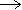

Ortho- and para- magnetic states of water
Every water molecule in the universe is either a para-water
molecule or an ortho-water molecule
Kenneth L Jones 2009
Each hydrogen atom in water has a magnetic moment associated with the proton's spin of ½. As is found in molecular hydrogen (H2), the protons (within the hydrogen atoms) in water (H2O) may possess parallel or antiparallel nuclear spin (see right). When the spins are parallel, a paramagnetic state called ortho-H2O has a magnetic moment = 1. This is the high spin (triplet) state, where the nuclear spin state is one of the three symmetric triplet states, with the total spin I = 1. The three symmetric spin states +1, 0, -1 (↑↑, ↑↓+↑↓, ↓↓) have equal energy in a zero magnetic field. This spin state always possesses positive energy with a minimum energy level of 284.7 J mol−1 (23.794352 cm−1) H216O, [607c], 284.4 J mol−1 (23.773510 cm−1) H217O [607a], or 284.2 J mol−1 (23.754902 cm−1) H218O [607a]. The ground state of para-water is the absolute rotational ground state (|jκ aκc⟩ = |0 00⟩, zero rotation), whereas the ground state of ortho-water is the first excited rotational state. |jκ aκc⟩ = |1 01⟩. When the spins are opposed, there exists the nonmagnetic state called para-H2O with magnetic moment = 0 with just one antisymmetric spin state (↑↓-↑↓) and magnetic moment = 0. Some of the water molecules in this low spin (singlet) state will not be rotating even at room temperature.
Equilibrium ortho: para ratio of gas, from [2478]
Although ortho-hydrogen and para-hydrogen can be easily separated and characterized (and have differing melting points, boiling points, vapor pressure, thermal conductivity, and heat capacity), this is not so for the separation of ortho-water and para-water as they undergo relatively facile proton exchange. Para-H2O does not interact with an external magnetic field, but ortho-H2O does. Conversion between these isomers is symmetry-forbidden for isolated water molecules, and they act as different molecular species. They can change their spin state on interaction with another particle, including other water molecules. The equilibrium ratio of these nuclear spin states in H2O is all para at zero Kelvin, where the molecules have no rotational spin in their ground state, shifting to the most stable ratio [1694] of 3:1 ortho: para, in the relative amounts of the number of magnetic states, at less cold temperatures (>50 K, see left [2478]). The equilibrium takes months to establish itself in ice (or gas) and nearly an hour in ambient water [410]. It is now thought that the ratio lies far from equilibrium and much closer to 1:1 in liquid water due to hydrogen bond formation [2076]. This means that liquid H2O effectively consists of a mixture of non-identical molecules, and the properties of pure liquid ortho-H2O or para-H2O are unknown. The differences in the properties of these two forms of water are expected to be greater in an electric field [1186], which may be imposed externally, from surfaces, or from water clustering itself. Many materials preferentially adsorb para-H2O due to its non-rotation ground state [410, 835]. The apparent difference in energy between the two states is a significant 1-2 kJ ˣ mol−1, far greater than expected from spin-spin interactions (< μJ mol−1) [835]. It has been suggested that structural rearrangements may be induced by ortho-H2O: para-H2O conversion [1430], as it is possible that hydrogen bonds between para-H2O, possessing no ground state spin, are stronger and last longer than hydrogen bonds between ortho-H2O [1150]. It is thus possible that ortho-H2O and para-H2O form separate hydrogen-bonded clusters [1150], with para-H2O being preferred in the low-density tetrahedrally coordinated clusters and ortho-H2O being preferred in the high-density clusters [2070], where their rotation is more easily accommodated. Picoliter samples of pure ortho-H2O and para-H2O may be separated in a strong dc electric field [2156].
The separated para- and ortho- water react differently with diazenylium ions, N2H+ [3270].
N2H+ + o-H2O  H3O+ + N2
N2H+ + p-H2O H3O+ + N2 23% faster
There is a 23 % higher reactivity for the para- nuclear-spin isomer, which was attributed to the ortho-water rotating faster than the para-water, reducing the attractive forces involved in the interaction.
C60 Fullerene trapped H2O

Ortho-H2O and para-H2O can be separately studied as isolated freely-rotating molecules down to 5 K while contained inside fullerene molecules (see left). At this temperature, it exists as 100% para, but at 15 K, it exists as a ~50% mixture while reaching an equilibrium mixture of ~75% ortho at 40 K [2436].
Equilibrium ortho: para ratio of trapped H2O, from [3213]
At 5 K, the experimental ortho:para ratio is 0.12 whereas, theoretically (see right), it should be about 0.01 [3213]. This has been explained by quantum relaxation theory, whereby the non-zero state is metastable for long periods at such low temperatures [3969].
The lowest rotational energy levels of the trapped water molecules. The levels are labelled separately by the quantum numbers JKaKc , from [3975]
Investigation of the ortho: para conversion of the single trapped water molecule has shown that metastable ortho-water molecules are present at low temperatures with breakage of its three-fold rotational degeneracy of its ground state [2548]. The equilibrium concentrations are displayed above right [3213]. The time constants for the para:ortho equilibration in ambient temperature solution have been found to be 30 s for the 16O isotopologue of water and 16 s for the 17O isotopologue. The faster para:ortho conversion of H217O has been attributed to 1H- 17O dipole-dipole interactions [3213].
A further infrared absorption spectroscopy study of encapsulated
H2O@C60 has been carried out at 4 K [4196]. The permanent dipole moment of the H2O was found to be 0.5 D, with its translational mode of the quantized center of mass motion in the molecular cage of C60 at 110 cm-1 (13.6 meV).
Due to deuterium's nuclear spin of 1 (compare ½ for H's spin; ortho D2O has two spin states of 2 and 0; para D2O has one spin state of 1), the lowest energy form of D2O is ortho. D2O converts to a 2:1 ortho: para ratio at higher temperatures [3339]. 16O and 18O have zero spins, whereas 17O has a spin of 5/2. The six molecular possibilities are ortho-D216O, para--D216O, ortho-D217O, para--D217O, ortho-D218O, and para--D218O, with degeneracies of 6, 3, 36, 18, 6, and 3, respectively [4124]. The difference in energy between the lowest ortho-state and the lowest para-state is 12.1170191 cm−1 (D216O), 12.098600 cm−1 (D217O), and 12.082026 cm−1 (D218O) [607d].
HDO, having non-equivalent hydrogen atoms, does not possess an ortho: para distinction. T2O behaves similarly to H2O as tritium also possesses a nuclear spin of ½. H3O+ ions (found free in space) also exist in both ortho- (all three hydrogen spin-states are parallel) and para- (mixed hydrogen spin-states) forms with differing reactivities. Ortho- para- ratios have been determined in comets and interstellar clouds. Models suggest that the ratios should be constant in interstellar clouds below ∼30 K and to depend essentially on the temperature-dependent spin state of H2 [3798].
[Back to Top  ]
]
Home | Site Index | The water molecule | Easier introduction | Water vibrations | H2O orbitals | Water dimer | LSBU | Top
This page was established in 2015 and last updated by Martin Chaplin on 22 October, 2021